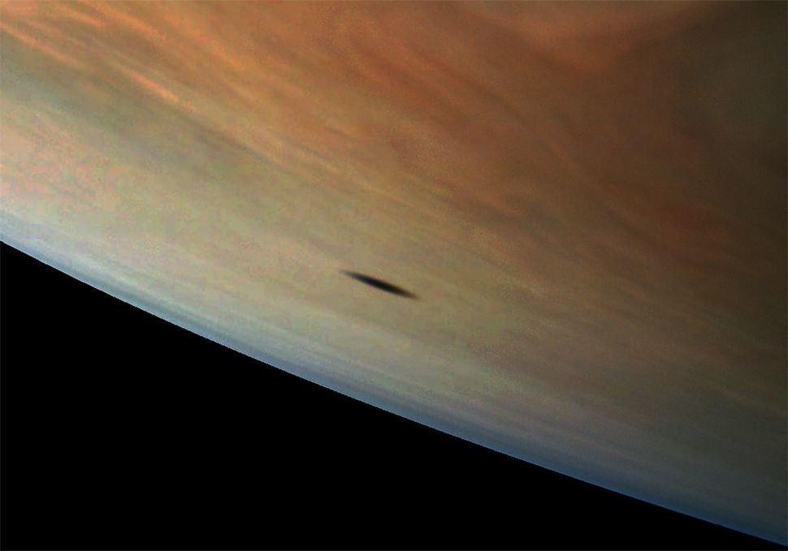

Posted 2d ago
Amalthea, the largest of Jupiter's inner satellites, casts a shadow on the giant gas
planet in this photo taken by NASA's Juno spacecraft. The moon's shadow has an elongated
shape because
of its position in relation to Jupiter, but also because the moon itself has an
odd shape. Because Jupiter
has at least 69 moons, solar eclipses like this one are more
common than they are here on Earth.
The flyby caused some problems for Galileo. The spacecraft went into safe mode only
30 minutes after
going past Amalthea. NASA said it was ready for problems, because
Galileo was on its last legs, and the
radiation near Amalthea was strong. However, NASA
quickly fixed the problem and got Galileo working
again.Less than a year later, Galileo
threw itself into Jupiter's atmosphere. The spacecraft was crushed by the
high pressure
in Jupiter's atmosphere, but its data still survives on Earth.